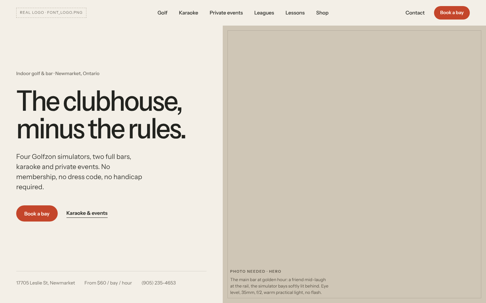

Direction A · Recommended
Open Membership

A members' club where everyone is a member. Light, quiet and confident, with one red accent reserved for booking.
Instrument Sans · “The clubhouse, minus the rules.”
Direction B
After Hours

The club at 10 pm. Cinematic, low-light and amber, with golf as the excuse and the night as the product.
Inter Tight · “Golf until last call.”
Direction C
The Clubhouse Journal

The club as a printed journal: one serif family, captions and a contents list, closer to an apparel lookbook.
Newsreader · “Golf for the rest of us.”